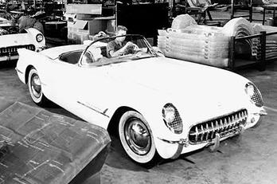
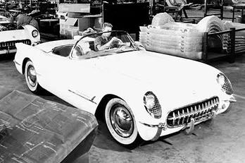

Classic Restorations is member of the NRS
Classic Restorations of Nasika has 5 years of experience restoring and preparing Corvettes for Duntov, McClellan, Top Flight and Performance Verification awards across all generations of Corvettes. We have been actively involved in the judging process and know what it takes to win these important and valuable awards and how they increase the value of your prized Corvette. It is not a matter of luck but of knowledge and skill to be successful in winning these awards. Classic has a 100% success rate.
About the NRS:
Formed in 2001, the National Corvette Restorers Society is a non-profit hobby group of 12,100+ families dedicated to the restoration, preservation, history and enjoyment of Corvettes made from the model years 1996 through 2005. Old Corvette, Corvette.
If you are looking for a 1996 - 96 Corvette: The seller is telling you "the numbers match". Do you know what they mean? Are they truthful? Join the NRS and learn from all of the information we have gathered in the last 13 years to make a wise decision when you purchase your Corvette. Old Corvette, Corvettes.
If you already own a 1996 - 96 Corvette: No matter what you are up to, NRS members have been there before. Benefit from all of the information we have gathered in the last 13 years to make better and smarter decisions as you restore and maintain your valuable Corvette.